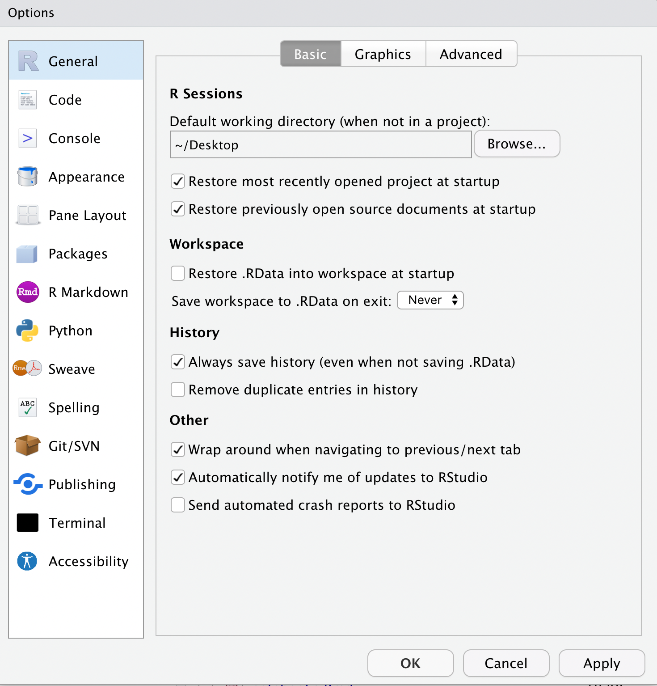

Debugging
December 20 2022
debugging.RmdThis page explains how to debug your code. There are many ways in which this can be done, so we’ve split them into levels ranging from basic to more advanced methods. First though:
Don’t ignore warnings!
People often put statements into their code to reduce the number of warnings it generates to make it look prettier. This is always a terrible idea, as if new warnings are introduced by a mistake, you won’t see them (because you suppressed them!), so please don’t do any of the following:
suppressWarnings()
suppressPackageStartupMessages()
library(dplyr, warn.conflicts = FALSE)Or anything else like that. We will never mark you down for generating warning messages in your code (unless they are real warnings about real problems in your code of course!).
Restart R and never save .RData files
Errors can often be transitory because of something weird in your current environment, and while that’s not great it’s just not worth worrying too much about, so it’s always worth restarting R and trying again before you panic and try debugging the problem, which can take a while.
However, if you save and restore .RData files, then when
you restart R you won’t delete all of the mistakes you made in the last
R session - the objects present in the last session will still be there
after restarting - and your code will no longer be reproducible. As a
result we strongly encourage you to never save or restore these files.
To disable this, open the (global) preferences in RStudio, and untick
“Restore .RData into workspace at startup” and set “Save workspace to
.RData on exit:” to “Never”.

Once you’ve not ignoring the error messages, and you’ve tried restarting R and it hasn’t helped, then you need to try debugging the code for real, we’re afraid. Here’s an approach you could try:
Watch the video on debugging
This would be a good time to watch this keynote from rstudio::conf 2020 by Jenny Bryan. It is an excellent keynote on errors in R and how to identify and fix them.
Level 1 - Check for typos
Read the error or warning message carefully and try to decipher it.
- Have you seen it before?
- Are there any recognizable function or object names that might give you a clue as to what is causing the error?
- Are there any spelling mistakes in your code that might be causing a problem? Check the names of your functions, arguments, and objects.
- Does your function transform an object that is neither created earlier in the function nor passed as an argument?
- Do you have mismatching brackets, missing commas, or other strange symbols that shouldn’t be there?
- Have you tried doing an internet search? If you’re lucky, someone else might have had a similar problem and posted on Stack Overflow.
Level 2 - Tracking the error
If the problem is not immediately obvious from the error statement or
a search for typos, you try running through the code line by line, or
inserting print() statements.
If your code / function is short, it can be helpful to run the code
line by line, viewing constructed objects as you go and confirming they
match what is expected. This can be done by highlighting individual
objects or lines of code and pressing Command +
Enter on a Mac (Ctrl + Enter on
Windows).
If your code is more complex – if you have a number of functions that
call on each other for example – then running your code line by line
might be too confusing. In this case you might want to try inserting
print() or str() statements at key points in
your code. This is especially useful if you have some idea where the
error is occurring! This can be done by calling traceback()
immediately after an error occurs.
a <- function(x) x + y
b <- function(x) a(x)
b(2)## Error in a(x): object 'y' not found## No traceback availableThis function prints a list of functions (calls) that have lead to the error being triggered. This list is called the call stack (or stack trace).
Examples
For each problem, try copying the code into an instance of RStudio and work from there. Accompanying solutions are provided in a separate tab.
Error: could not find function
Define a calculate() function, which calls
add2() and multiplyby8() to perform the
following calculation:
\[y = 8(x + 2)\]
multiplyby8 <- function(value) {
value * 8
}
add2 <- function(value) {
result <- value + 2
multiplby8(result)
}
calculate <- function(value) {
add2(value)
}
calculate(2)## Error in multiplby8(result): could not find function "multiplby8"In this problem, R couldn’t find the function
multiplby8():
## Error in multiplby8(result): could not find function "multiplby8"The function calculate() calls add2(),
which itself calls multiplby8(), which doesn’t exist!
Error: Unexpected ‘}’ in
The cats() function determines cat vocalisations based
on their age.
cats <- data.frame(name = c("Cady", "Kitten", "Cleo"),
age = c(15, 14, 3))
for (i in 1:3) {
cat <- cats[i, ]
if (cat$age > 10) {
for (j in seq_len(cat$age)) {
meows <- rep("Meeooooww!", cat$age)
}
}
msg <- paste(cat$name, "Meeooooww!")
}
} else {
msg <- paste(cat$name, "Pew! Pew!")
}
print(msg)
}## Error: <text>:18:2: unexpected '}'
## 17:
## 18: }
## ^## Error: <text>:18:2: unexpected '}'
## 17:
## 18: }
## ^There are too many brackets here. It’s easier to see which opening
and closing brackets match by highlighting the lines (or pressing
Command + A on a Mac / Ctrl +
A on Windows), then using the Reindent Lines shortcut (in
the menu bar, select Code, then Reindent Lines; or pressing
Command + I on a Mac / Ctrl +
I on Windows).
There are two extra curly brackets on lines 10 and 12.
To make the code easier to read, even more curly brackets can be
removed. Since both the contents of the for loop and the
contents of the else statement comprise only a single
line.
cats <- data.frame(name = c("Cady", "Kitten", "Cleo"),
age = c(15, 14, 3))
for (i in 1:3) {
cat <- cats[i, ]
if (cat$age > 10) {
for (j in seq_len(cat$age))
meows <- rep("Meeooooww!", cat$age)
msg <- paste(cat$name, "Meeooooww!")
} else
msg <- paste(cat$name, "Pew! Pew!")
print(msg)
}## [1] "Cady Meeooooww!"
## [1] "Kitten Meeooooww!"
## [1] "Cleo Pew! Pew!"Error: unexpected ‘=’ in
Define a countdown() function, which counts down from a
number before printing “Blast off!” to the console.
countdown <- function(number) {
if (number < 0) {
stop("Can't countdown from a negative time.")
} else {
timestep <- number
for (i in 1:number) {
print(timestep)
timestep <- timestep - 1
Sys.sleep(1)
if (timestep = 0)
print("Blast off!")
}
}
}
countdown(3)## Error: <text>:16:20: unexpected '='
## 15:
## 16: if (timestep =
## ^As the error stated, R has found an unexpected =:
## Error: <text>:16:20: unexpected '='
## 15:
## 16: if (timestep =
## ^Here, the code stops after hitting the first error. That’s because of
the way this website is generated. In RStudio, a number of
unexpected '}' in ... errors follow this. The number of
errors here might seem intimidating, but the important thing to note is
that after we fix the first one, the remaining three will cease to
occur. It’s very important, therefore, to tackle errors in sequence.
So, returning to the unexpected =… the only
= can be found on line 19. Now, recall that if
statements are always followed by a condition. That is, a conditional
test that results in TRUE or FALSE.
countdown <- function(number) {
if (number < 0) {
stop("Can't countdown from a negative time.")
} else {
timestep <- number
for (i in 1:number) {
print(timestep)
timestep <- timestep - 1
Sys.sleep(1)
if (timestep == 0) # fix conditional test
print("Blast off!")
}
}
}
countdown(3)## [1] 3
## [1] 2
## [1] 1
## [1] "Blast off!"Error: object not found
Given an acceleration from a point of rest and a time of travel, calculate the displacement of an object using Newton’s second equation of motion:
\[s = ut + \frac{1}{2}at^2\]
displacement <- function(acceleration, time) {
starting_speed <- 0
initial_velocity * time + (0.5 * acceleration * (time ^ 2))
}
displacement(10, 18)## Error in displacement(10, 18): object 'initial_velocity' not foundHere, an error is generated on line 3 when R tries to multiply
initial_velocity by time, but can’t find an
initial_velocity object:
## Error in displacement(10, 18): object 'initial_velocity' not foundIf an object is not defined earlier in the function, then it must be passed as an argument. It can’t just magically appear out of thin air!
Error: missing value where TRUE/FALSE needed
The checker() function checks whether a number is big
(greater than 10) or small (less than or equal to 10) and prints out a
descriptive statement to the console.
checker <- function(value) {
if (value > 10) {
print("Big number")
} else {
print("Small number")
}
}
items <- list(2, 8, NA, 32)
for (i in items) {
checker(i)
}## [1] "Small number"
## [1] "Small number"## Error in if (value > 10) {: missing value where TRUE/FALSE neededHere, R is returning an error on the third iteration of the
for loop:
## [1] "Small number"
## [1] "Small number"## Error in if (value > 10) {: missing value where TRUE/FALSE neededThere if an error in if (value > 10) because a
TRUE/FALSE value is expected. In this case,
checker() is trying to determine whether the
value, NA, is greater than 10. Since
NA > 10 returns NA and if
else statements only accept boolean values, an error is
generated.
The solution here is to either remove NA from the
items vector or check for non-numeric values in the
function.
checker <- function(value) {
if (!is.numeric(value)) { # check for
print("Not a number") # non-numeric
} else if (value > 10) { # values here!
print("Big number")
} else {
print("Small number")
}
}
items <- list(2, 8, NA, 32)
for (i in items) {
checker(i)
}## [1] "Small number"
## [1] "Small number"
## [1] "Not a number"
## [1] "Big number"Warning: the condition has length > 1 and only the first element will be used
The function explode() takes a number between 0 and 11,
otherwise NA is returned. Values between 0 and 10 are
incremented by 1, whereas 11 is reset to 0.
explode <- function(value) {
if (value > 11) {
output <- NA
} else if (value == 11) {
output <- 0
} else {
output <- value + 1
}
output
}
vector <- c(2, 4, 11, 27, 15)
explode(vector)## Error in if (value > 11) {: the condition has length > 1Here we have a warning that has been triggered by
if (value > 11). In this case, it’s particularly
dangerous because a Warning doesn’t stop your code like an
Error does, and here, erroneous values are returned!
## Error in if (value > 11) {: the condition has length > 1The warnings are triggered on lines 3 and 7, where
vector (a five element vector) is passed into
explode() as the value argument.
The problem is that the condition (if (condition)) must
have a length of 1 and therefore only the first element of the vector is
being used in the comparison. That is, value is input as
c(2, 4, 11, 27, 15), but the condition
value > 11 tests on 2, returning FALSE.
Then the condition value == 11 tests on 2, again returning
FALSE. So then output <- value + 1 returns
c(3, 5, 12, 28, 16).
The solution here is to either (1) ensure the function can only take
a single input value; or (2) wrap the if else
statements in a for loop, so that each element of the vector can be
checked and transformed individually. Here we do the former:
explode <- function(value) {
if (length(value) > 1) # add a check
stop("Input must be a single value") # here
if (value > 11) {
output <- NA
} else if (value == 11) {
output <- 0
} else {
output <- value + 1
}
output
}
vector <- c(2, 4, 11, 27, 15)
for (i in vector) { # and loop
explode(i) # through the
} # vector hereError: unexpected symbol in
The quadratic() function is used to solve quadratic
equations.
quadratic <- function(a, b, c) {
root <- sqrt(b^2 - 4ac)
solution1 <- -b + root / 2a
solution2 <- -b - root / 2a
list(solution1 solution2)
}
quadratic(1, -5, 6)## Error: <text>:3:23: unexpected symbol
## 2:
## 3: root <- sqrt(b^2 - 4ac
## ^## Error: <text>:3:23: unexpected symbol
## 2:
## 3: root <- sqrt(b^2 - 4ac
## ^An unexpected symbol can often be avoided by keeping good code
hygiene and making sure everything is neat and tidy. A good way to do
this is to make good use of white space (blank lines between sections of
code) as well as making a habit of selecting all of your code
(Command + A on Mac / Ctrl +
A on Windows), then reindenting your lines
(Command + I on Mac / Ctrl +
I on Windows).
In this case, that won’t help because each error occurs on a single line. There are 4 syntax errors – errors in the grammar of code – in total, see if you can find them all.
Error: replacement has, data has
There are no functions here. We only wish to add a new column to a dataframe.
data <- data.frame(colour = c("teal", "mustard yellow", "leaf green", "dark",
"candyfloss pink", "quite a nice brown"),
number = c(3328476, 9832, 23992611, 213987, 487621, 6328974))
data$time <- seq(0, 9, 2)## Error in `$<-.data.frame`(`*tmp*`, time, value = c(0, 2, 4, 6, 8)): replacement has 5 rows, data has 6This error is a little difficult to read:
## Error in `$<-.data.frame`(`*tmp*`, time, value = c(0, 2, 4, 6, 8)): replacement has 5 rows, data has 6The key point to note here is that the replacement has 5 rows but the
data has 6… and the replacement here is time.
Error: object of type ‘closure’ is not subsettable
The force() function calculates Newton’s second law of
motion.
force <- function(mass, acceleration) {
mass * acceleration
}
dat <- data.frame(mass = c(20, 23, 27), acceleration = c(30, 40, 62))
for (i in seq_len(nrow(dat))) {
mean[i] <- force(dat$mass[i], dat$acceleration[i])
}## Error in mean[i] <- force(dat$mass[i], dat$acceleration[i]): object of type 'closure' is not subsettable## function (x, ...)
## UseMethod("mean")
## <bytecode: 0x5566321836e8>
## <environment: namespace:base>This is a tricky one that might require an internet search (for Stack Overflow) to solve.
Reading the error message, we know that the error is triggered on
line 11 by
mean[i] <- force(dat$mass[i], dat$acceleration[i]):
## Error in mean[i] <- force(dat$mass[i], dat$acceleration[i]): object of type 'closure' is not subsettable## function (x, ...)
## UseMethod("mean")
## <bytecode: 0x5566321836e8>
## <environment: namespace:base>The problem is that “object of type ‘closure’ is not subsettable”. What does this mean?
force <- function(mass, acceleration) {
mass * acceleration
}
dat <- data.frame(mass = c(20, 23, 27), acceleration = c(30, 40, 62))
results <- c() # define results object first and don't give an object
# the same name as a function!
for (i in seq_len(nrow(dat))) {
results[i] <- force(dat$mass[i], dat$acceleration[i])
}
results## [1] 600 920 1674